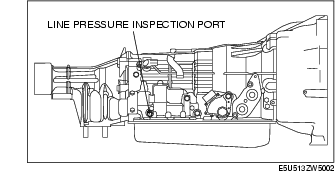
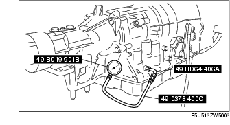

Workshop Manual ➭ TRANSMISSION/TRANSAXLE ➭ AUTOMATIC TRANSMISSION[SJ6A-EL] ➭ MECHANICAL SYSTEM TEST [SJ6A-EL]
MECHANICAL SYSTEM TEST [SJ6A-EL]
id051311249100
Mechanical System Test Preparation
-
Engage the parking brake and use wheel chocks at the front and rear of the wheels.
-
Inspect the engine coolant level. (See ENGINE COOLANT LEVEL INSPECTION [L8, LF].)
-
Inspect the engine oil level. (See ENGINE OIL LEVEL INSPECTION [L8, LF].)
-
Inspect the ATF level. (See AUTOMATIC TRANSMISSION FLUID (ATF) LEVEL ADJUSTMENT [SJ6A-EL].)
-
Inspect the idle speed. (See Idle Speed Inspection.)
-
Inspect the ignition timing. (See Ignition Timing Inspection.)
-
Wait until the engine and transmission reach normal operating temperature.
Line Pressure Test
- Perform mechanical system test preparation. (See Mechanical System Test Preparation.)
• Removing the square head plug when the ATF is hot can be dangerous. Hot ATF can come out of the opening and badly burn you. Before removing the square head plug, allow the ATF to cool.
- Connect the SSTs (49 HD64 406A, 49 0378 400C) to the line pressure inspection port and replace the gauge of the SST (49 0378 400C) with the SST (49 B019 901B).


-
Start the engine and warm it up until the ATF reaches 60-70 °C {140-158 °F}.
-
Read the line pressure while the engine is idling for the D range.
-
Read the line pressure while the engine is idling for the P, R, N positions range in the same manner as in Steps 4-5.
-
Stop the engine, then replace the SST (49 B019 901B) with the gauge of the SST (49 0378 400C).
• If the accelerator pedal is pressed for more than 5 s while the brake pedal is pressed, the transmission could be damaged. Therefore, perform Steps 11 and 12 within 5 s.
-
Gradually depress the accelerator pedal with the right foot.
-
When the engine speed no longer increases, quickly read the line pressure and release the accelerator pedal.
-
Shift the selector lever to the N position and idle the engine for 1 min or more to cool the ATF.
-
Read the line pressure at the engine stall speed for the D and R position in the same manner as in Steps 9-13.
• Removing the square head plug when the ATF is hot can be dangerous. Hot ATF can come out of the opening and badly burn you. Before removing the square head plug, allow the ATF to cool.
5.9-8.8 N·m {61-89 kgf·cm, 53-77 in·lbf}
Evaluation of line pressure test
Stall Speed Test
-
Perform mechanical system test preparation. (See Mechanical System Test Preparation.)
• If the accelerator pedal is pressed for more than 5 s while the brake pedal is pressed, the transmission could be damaged. Therefore, perform Steps 5 and 6 within 5 s.
-
When the engine speed no longer increases, quickly read the engine speed and release the accelerator pedal.
-
Shift the selector lever to the N position and idle the engine for 1 min or more to cool the ATF.
-
Perform a stall test of the D and R position in the same manner as in Steps 3-7.
Time Lag Test
-
Perform mechanical system test preparation. (See Mechanical System Test Preparation.)
-
Warm up the engine until the ATF temperature reaches 60-70°C {140-158°F}.
-
Use a stopwatch to measure the time it takes from shifting until shock is felt. Take three measurements for each test and average from the results using the following formula.
Average time lag = (Time 1 + Time 2 + Time 3) / 3
N position → D range: 0.7 s or less N position → R position: 1.2 s or less
Evaluation of time lag test